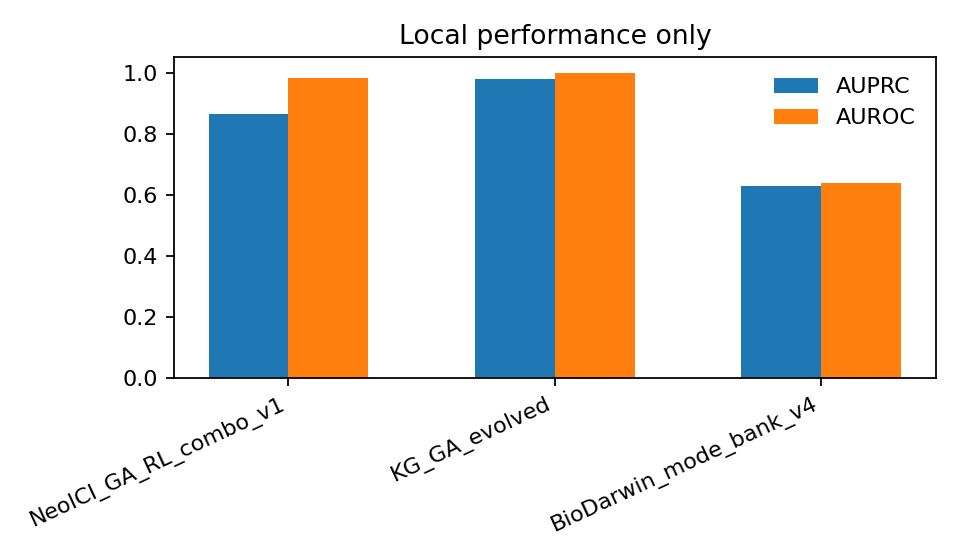

This is a performance-contract reanalysis. NeoPrecis has a published immunogenicity and clonality-aware landscape framework; NeoICI is our combo-therapy prioritization layer. The comparison is honest but not yet a strict paired rerun because the same benchmark table is not available locally for both systems.
| system | layer | benchmark | published_contract | comparable_now | current_status | source |
|---|---|---|---|---|---|---|
| NeoPrecis | immunogenicity | CEDAR / NCI / T-cell and landscape evaluation | NeoPrecis-Immuno and NeoPrecis landscape are benchmarked on CEDAR, NCI GI, melanoma, and NSCLC cohorts; MHC-II AUROC is stated as best, and NP-Integrated / clonality-aware landscape improves ICI-response modeling. | partial | code available in GitHub repo; no same-benchmark local re-run completed here | Nature Communications article + GitHub repo |
| NeoICI_GA_RL_combo_v1 | combo prioritization | our validation-like local gauntlet | experiment-priority score combining HLA-I, helper/dual-class, TCR/MD, BioDarwin mode-bank, and GA/RL | yes | AUPRC 0.863 / AUROC 0.983 on academic_validation_like; 0.563 / 0.597 on industrial_locked_v0 | local TSV gauntlet |
| KG_GA_evolved | prior GA/RL champion | our validation-like local gauntlet | retrospective + validation-like champion, frozen before prospective wetlab | yes | AUPRC 0.978 / AUROC 0.999 on academic_validation_like; 0.933 / 0.943 on academic_all | local TSV gauntlet |
| BioDarwin_mode_bank_v4 | industrial anchor | our locked public mini-set | mode-bank / public anchor comparator | yes | AUPRC 0.628 / AUROC 0.639 on industrial_locked_v0 | local TSV gauntlet |

The strongest local validation-like scorer remains KG_GA_evolved; NeoICI_GA_RL_combo_v1 is strong but not top. Industrial locked still favors BioDarwin_mode_bank_v4.